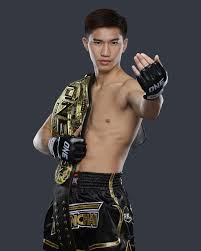
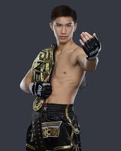

the greatest fighters in muay thai history!!
Since one championship has grown in populairty. Some of the greates muay thai figthers of all time has risen up. To show them what path they had to walk to reach the champion positions.
Who are these fighters
Rodtang iron chin fly weitght muay thai world champion
Tawanchy featerweight world champion and second pound for pound fighter in th one championship
john haggerty also known as the general was the underdog in the muay thai series and is now the new bantamweight muaythai champion
What is the one championship
Aiming to showcase the true beauty of martial arts through the creation of authentic heroes and the worlds most captivating events, ONE Championship has planted its roots as Asias largest sports media property. ONE mission is to champion the many benefits and values of martial arts such as respect, courage, integrity, and humility. By telling athletes inspirational stories, ONE hopes to provide society at large with role models to look up to, characters that empower people with the hope, inspiration, and strength to overcome adversity in their daily lives. Headquartered in Singapore, ONE employs world-class production standards and industry-leading event production to hold the largest sports entertainment events in major cities across Asia. Each spectacle features some of the biggest blue-chip partners in the world and stars the best international martial artists. As the worlds largest martial arts organization, ONE broadcasts globally to over 190 countries with an extensive list of broadcast partners, which includes Amazon Prime Video Sports, Globos Combate, Channel 7 HD, beIN Sports, Abema, Disney+ Hotstar, and more.